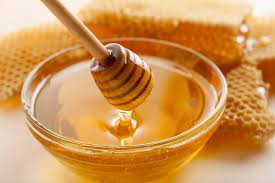
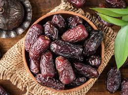

Discover Nature's Sweet Bounty: Honey and Dates
In a world filled with processed sugars, there's an oasis of natural sweetness waiting to be explored: honey and dates. At [Your E-commerce Store Name], we're thrilled to bring you these pure, unadulterated gifts from Mother Nature herself.
Honey: Liquid Gold of Nature
Imagine a sweet elixir crafted by bees from the nectar of flowers. That's honey—a versatile, golden delight that not only sweetens your day but also offers a myriad of health benefits. From its natural antibacterial properties to being a rich source of antioxidants, honey is more than just a sweetener—it's a natural healer.
At our store, you'll find a variety of honey—raw, flavored, and sourced from different floral origins. Whether you drizzle it over your morning oatmeal or add it to your favorite cup of tea, our range of honey will elevate your culinary experience.

Dates: Nature's Candy
Sweet, chewy, and packed with nutrients—dates are nature's candy. These little jewels are not just delicious but also a powerhouse of essential vitamins, minerals, and fiber. They make for a perfect snack, offering a natural energy boost without any added sugars or preservatives.
Explore our collection of dates—soft Medjool, crunchy Deglet Noor, or perhaps something new to tantalize your taste buds. Indulge guilt-free in the goodness of dates as a wholesome snack or incorporate them into your recipes for a touch of natural sweetness.

Why Choose Natural?
When you choose honey and dates from Maxdot.pk, you're choosing purity. Our products are sourced responsibly, ensuring the highest quality that nature has to offer. Say goodbye to artificial additives and processed sugars—embrace the goodness of nature in every spoonful.
Experience the pure sweetness of nature with our exquisite range of honey and dates. Shop now and let nature's bounty sweeten your life!